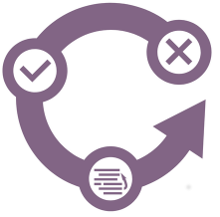

tts 
Contents
Build and setup
Retrieving TTS
Building TTS
Installing TTS
Compiling with TTS
TTS as a dependency
Using TTS
Reference Manual
Customizing TTS
Design Rationale
tts
Docs
»
Build and setup
View page source
Next
Previous
Build and setup
¶
Retrieving TTS
¶
Building TTS
¶
Installing TTS
¶
Compiling with TTS
¶
TTS as a dependency
¶